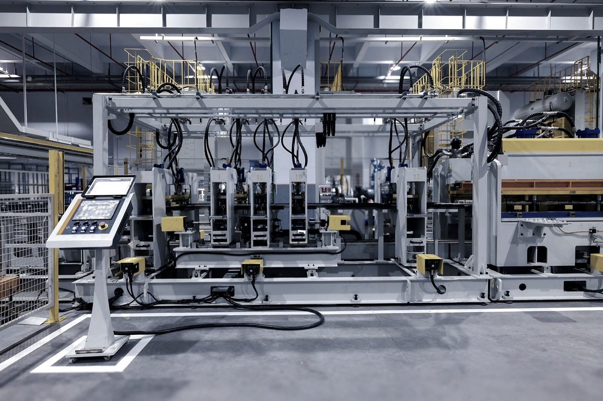
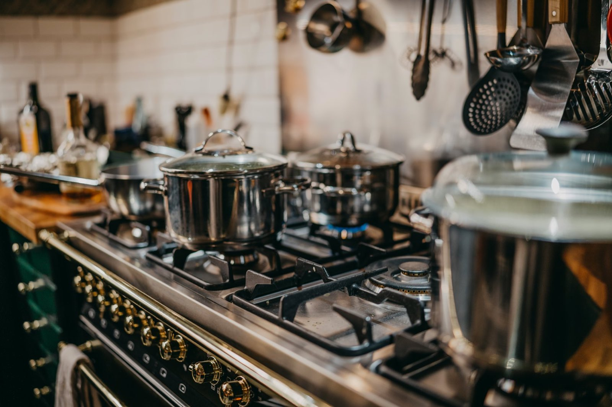
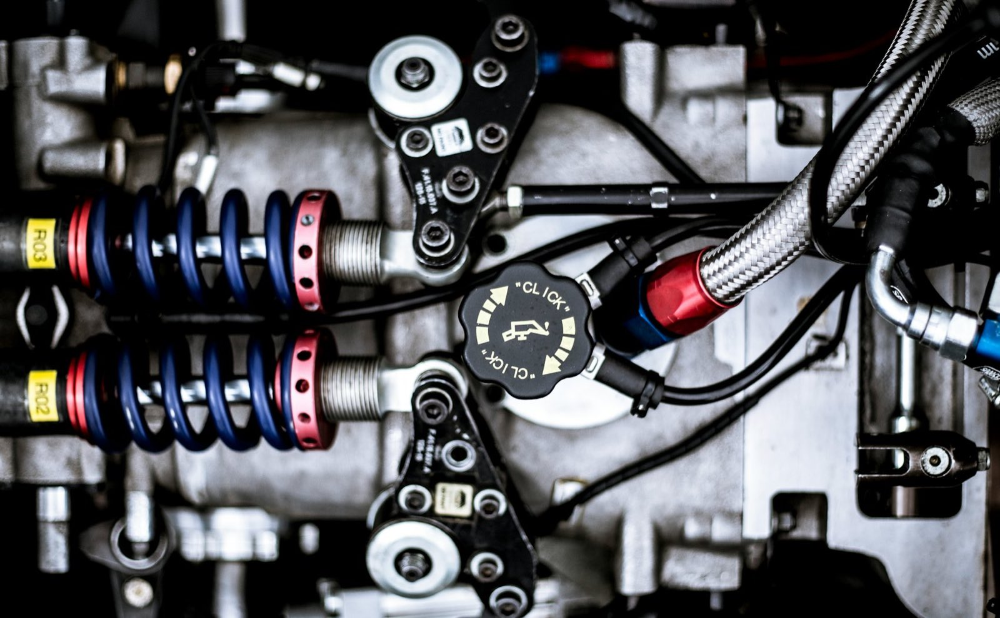
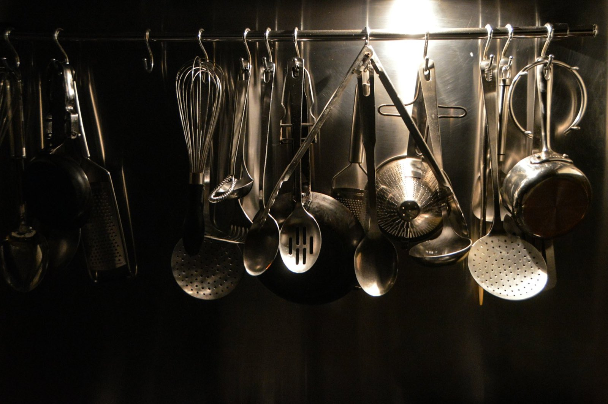

金属プレス加工 ── 新潟県弥彦村
SCROLL
仕事のこと
難しいのは、
01 何をしているか
難しいのは、
薄いこと。
板が薄いほど、絞れば割れ、押さえればしわが寄ります。逃げ場が狭い。カワイ製作所が引き受けてきたのは、その狭いところです。


数字
02 規模
数字で見るカワイ製作所。
- Founded
- 1972
- Press
- 23台
- Equipment
- 35台
- Coil feeder
- 2.3mm
1972年1月4日設立。弥彦村で操業を続けています。
25トンから200トンまで。サーボプレス1台を含みます。
プレス機23台＋タッピング・旋盤・研磨などの周辺12台。
NCコイルフィーダーが通せる板厚の上限です。
※ 台数は設備一覧の実台数を数えたもの。詳細は設備一覧に載せています。

巻かれた板が入り、形になって出ていく。
分野
部品は、
03 手がけているもの
部品は、
暮らしの裏側に
あります。
空調設備。自動車関連部品。調理器具。いずれも表からは見えないところで、絞られたステンレスが形を受け持っています。人目に触れない部品ほど、寸法が狂うと全部が止まる。だから同じ形を、同じ精度で出し続けることが仕事になります。
01
空調設備
筐体まわり・風の通り道の部品
02
自動車関連部品
繰り返し数量の出る絞り物
03
調理器具
深さと面のきれいさが要るもの



設備
200トンから
04 プレス機 二十三台
200トンから
25トンまで。
大きい機械が1台あっても、小さい仕事は流れません。工程ごとに合う圧を選べるように、トン数を刻んで並べてあります。
200t× 1台
サーボプレス
速度と停止位置を制御できる。深く絞る工程で効く
150t× 3台
クランクプレス
絞りの前段・中段を受け持つ主力の帯
110t× 3台
クランクプレス
中物の絞りと抜きを受ける
100t× 1台
クランクプレス
110tと80tの間を埋める1台
80t× 8台
クランクプレス
いちばん台数が多い層。同時進行がここで効く
75t× 3台
クランクプレス
小物の絞りと仕上げの工程
60t× 1台
クランクプレス
薄板の抜き・曲げに合わせて使う
45t× 2台
クランクプレス
軽い工程を並列で流すための台
25t× 1台
クランクプレス
小さな抜き・仕上げまで自社で完結
材料
6種類を、

05 取扱材料
6種類を、
同じ建屋で扱います。
材料が変われば、絞りの効き方も、金型の当たり方も変わります。同じ工場でどれも回せることが、そのまま相談のしやすさになります。得意なのはステンレスの絞り。ばね性の要るりん青銅、軽さのアルミ、電気を通す真鍮・黄銅、そしてチタン。
SUSステンレス
ALアルミ
BS真鍮
BSP黄銅
PBりん青銅
TIチタン
板材とコイル材、どちらでも受けます。コイル材はNCフィーダーで自動送り、板厚2.3ミリまで。数の出る量産に向きます。板材は1枚ずつ入れるぶん、少ない枚数や試作に向きます。

CONTACT ご相談
図面が1枚あれば、話が早い。
まずは電話でも構いません。
できる・できないの見当は、その場で付きます。板厚、材質、数量、いつ要るか。この4つが分かれば、あとはこちらで組み立てます。